Booker helps you write a novel in Obsidian. New projects are made in a folder called Booker (you can pick another folder for each project). Projects made earlier in the StoryLine folder layout open as they are.
A project is a folder of plain notes. You write in the notes. Booker gives you views to plan and arrange them.
You need Obsidian 1.5.0 or newer.
main.js, manifest.json and styles.css, or build them (see the README).<your vault>/.obsidian/plugins/booker/.On iPhone and iPad, keep the vault in iCloud Drive, install on the Mac, then enable the plugin on the phone.
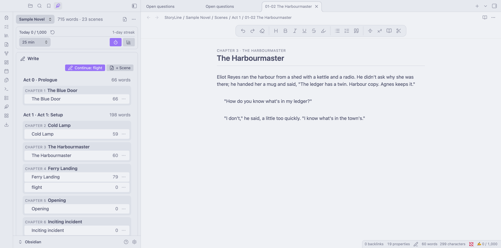
The hub on the left, a scene open in the middle. The scene's chapter and title are drawn above the text.
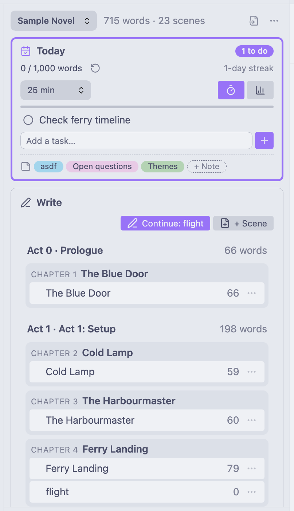
The top of the hub: project picker, then the Today card (words, sprint, tasks and notes) and the Write card with your acts, chapters and scenes.
The hub has these cards.
System/tasks.json.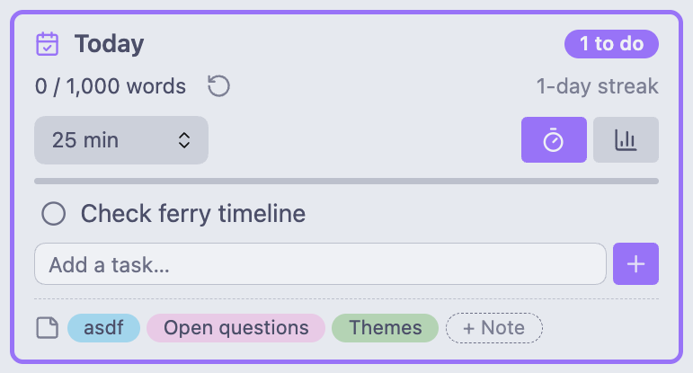
The Today card.
Every project view (board, plotlines, timeline map, story checks, stats) follows the project picked at the top of the hub: change the project and the views that are open change with it.
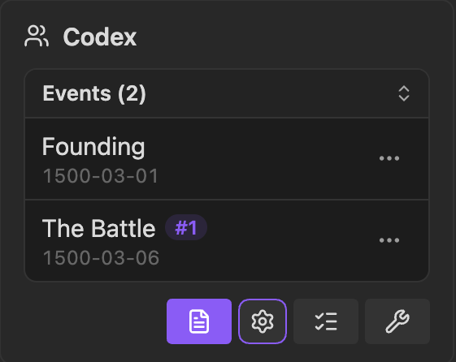
The Codex card for a sequence category.
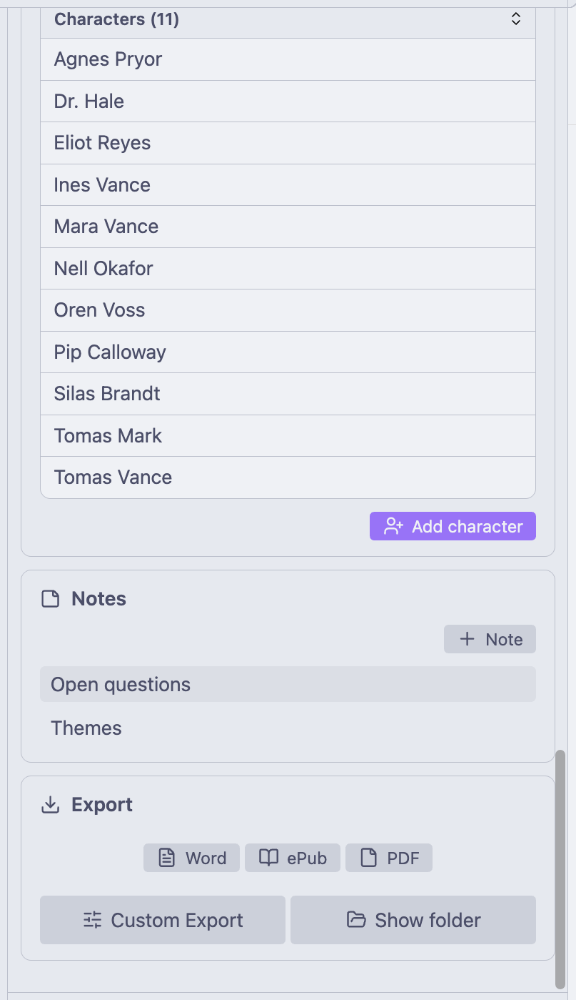
The bottom of the hub: Codex and Export.
The Import button beside the ⋯ menu at the top of the hub opens the window for bringing in a StoryLine folder or a Markdown manuscript (see Importing a Markdown manuscript).
The hub lives in the left sidebar. The right sidebar has a Documents and Reference panel (ribbon icon or the Open Documents / Reference panel commands): Documents lists your sources, adds and searches them; Reference inserts scripture and word studies, citations and footnotes into the note you were writing.
Buttons in Booker are grouped on the right. When a pane is narrow they lose their labels and show only icons. Hover for the name.
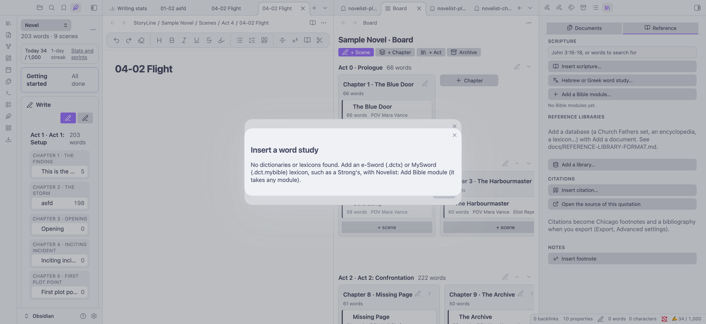
A narrow hub shows icons only.
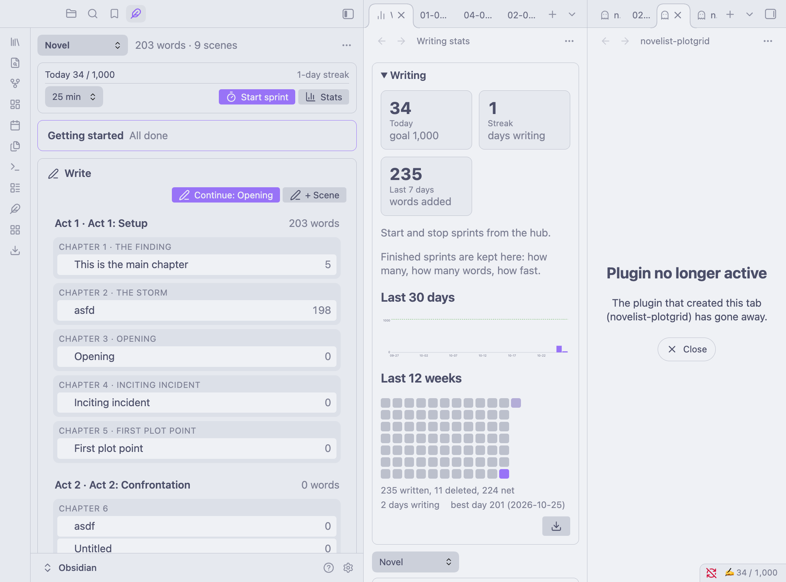
The writing strip: today's words, the sprint timer and the Stats button.
A project is one folder in your vault, by default inside a folder called Booker:
Novel/
Novel.md the project note (type: storyline)
Scenes/Act 1/01-01 Title.md
Codex/Characters/Name.md
Codex/Locations/Name.md
Codex/Items/ ... other kinds
Notes/ Research/ Archive/
System/ plotlines.json snapshots/ ...
A scene's file name starts with its act and its number in the book, such as 02-03. Numbers are padded to two digits and grow past 99 without trouble. Booker renames files for you when you move scenes.
Act and chapter names, and empty chapters, are kept in the project note.
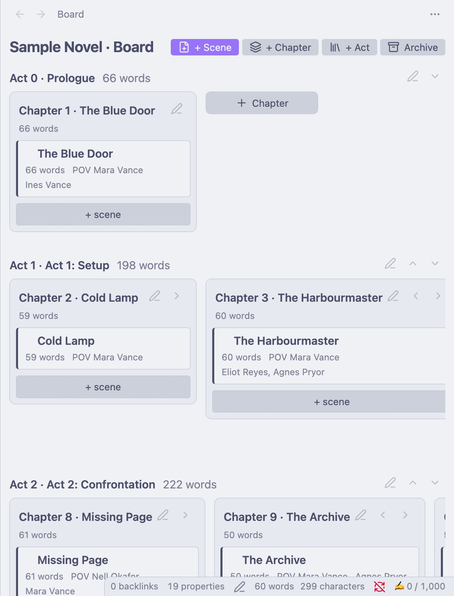
The board: acts across the page, chapters as columns, scenes as cards.
Open it from the Plan card or Booker: Open board.
Archive/ folder, not in the manuscript or the export): right-click its card, or use Archive in the inspector. It moves to the project's Archive/ folder and the scenes after it close up. The board's Archive button lists archived scenes; Restore puts one back at the end of the chapter it came from.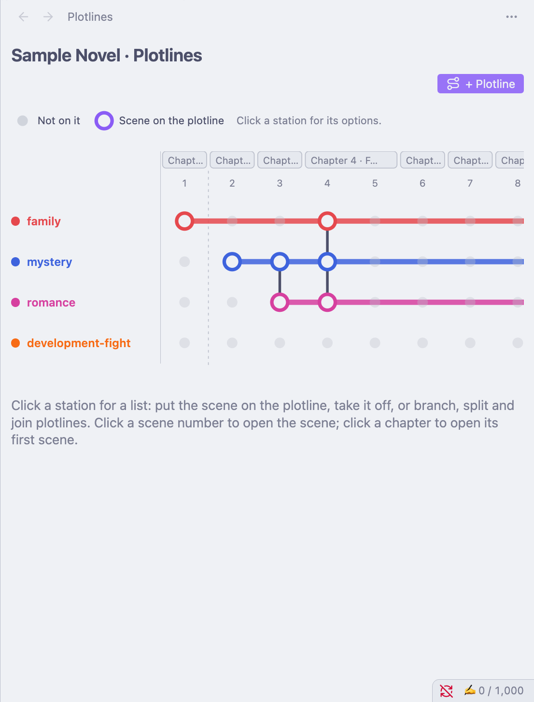
The plotlines map: a lane per plotline, a station for each scene.
A plotline is a tag on a scene, The map draws one lane per plotline and one column per scene.
tags, setups in plotline_setup, payoffs in plotline_payoff.Colours, notes and the branches are saved in System/plotlines.json.
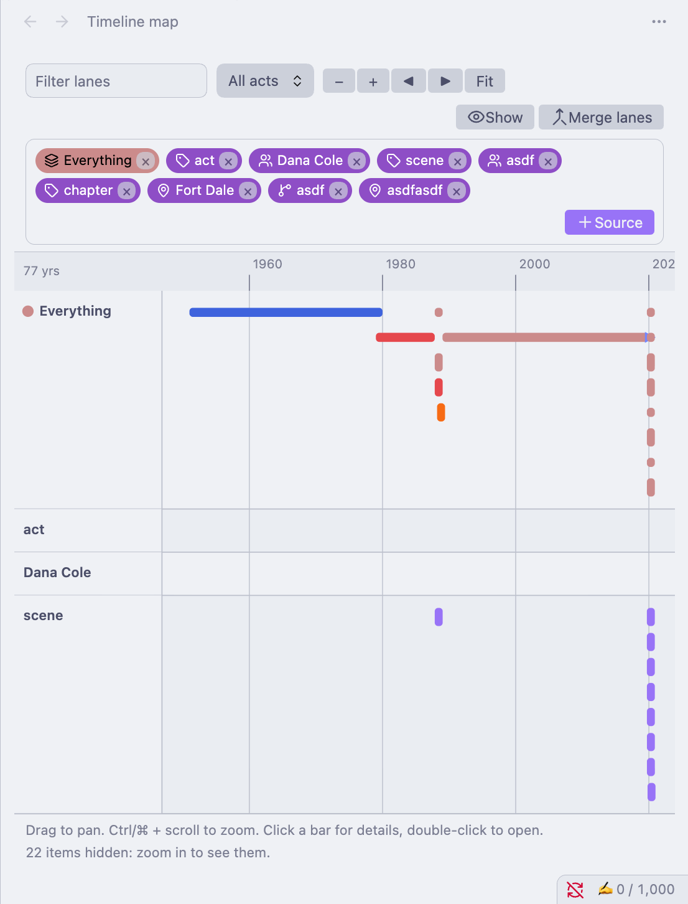
The timeline map with sources as lanes and scenes as bars on a date axis.
Open it from the Plan card. Anything with a story date can go on the map: scenes, lives, events, items, and any note in your Codex that has a Date property. Chapters and acts appear as spans worked out from their scenes.
Use Source to add a character, a place, a plotline, a life or a kind of element. Each source gets a lane holding everything connected to it, and items that overlap in time are pushed to rows below. Merge lanes puts all your sources in one lane. Show hides or shows kinds of element (acts are hidden to start with). Each source is a filled pill with an icon; press the pill (anywhere but the ×) to pick its colour, and the text switches between dark and light by itself. To colour a kind of element, add the kind as a source. A note's own Colour property wins. Your sources and colours are saved with the project in System/timeline-map.json.
A character can have several lives, such as one who is reborn. Open the character in the inspector and choose +Life. Each life is a note in Codex/Lives with its own dates. On a scene, the Lives field says which life the scene belongs to, and the scene then also counts for the character. Add the character as a source and you see their lives, scenes and chapters together.
Every scene that has a story date is a bar on a time axis.
1342-06-10..1342-07-01.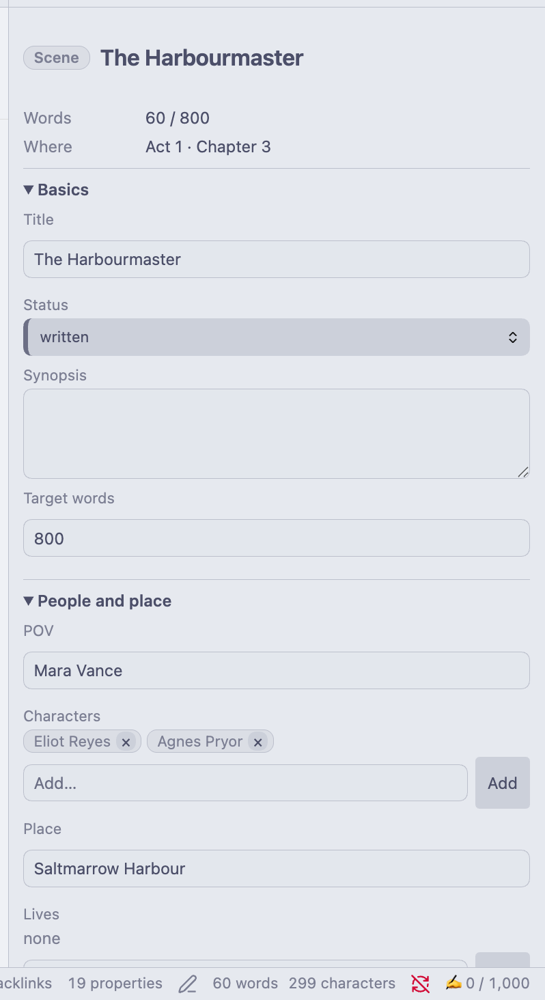
The inspector panel for a scene: basics, people and place, dates, plotlines and the scene's other properties.
Run Booker: Open File info panel. It shows the note you have open.
For a scene: status, target words, POV, characters, place, plotlines, date, time, time jump, conflict, emotion and intensity. Find names looks for characters and places in the text.
For a codex entry: aliases and the fields for its kind (a character has role, goal, flaws and so on; a place has description, atmosphere and so on), and the scenes it appears in.
For a scene there is one more section, Beat, which appears when the project follows a beat sheet and says which beat the scene is. When Setup and payoff tracking is on, Setup and payoff also lists the scenes this one sets up and the scenes that set it up; each link is written on both scenes (payoff_scenes and setup_scenes).
Changes are saved to the note's properties.
Snapshots. A snapshot is a saved copy of one scene at a moment you choose, for trying a rewrite without fear. Take snapshot saves the scene as it is now, with an optional label. Each snapshot has Compare (shows added and removed lines against the scene today), Restore (the current text is saved as a snapshot first, so a restore can be undone) and Delete. Snapshots are kept in System/snapshots/, so they never count as scenes.
Project notes. The hub's Today card lists the notes in the project's Notes/ folder (themes, open questions) as chips and has +Note.
Add world notes from Codex. A character lives in Codex/Characters, a place in Codex/Locations.
When you pause typing in a scene, Booker looks for the names and aliases of your characters and places:
characters list. A place found becomes its location.Commands: Add characters and places found in this scene to its properties, and the same for every scene. Settings control whether detection runs, capitalisation, and the pause.
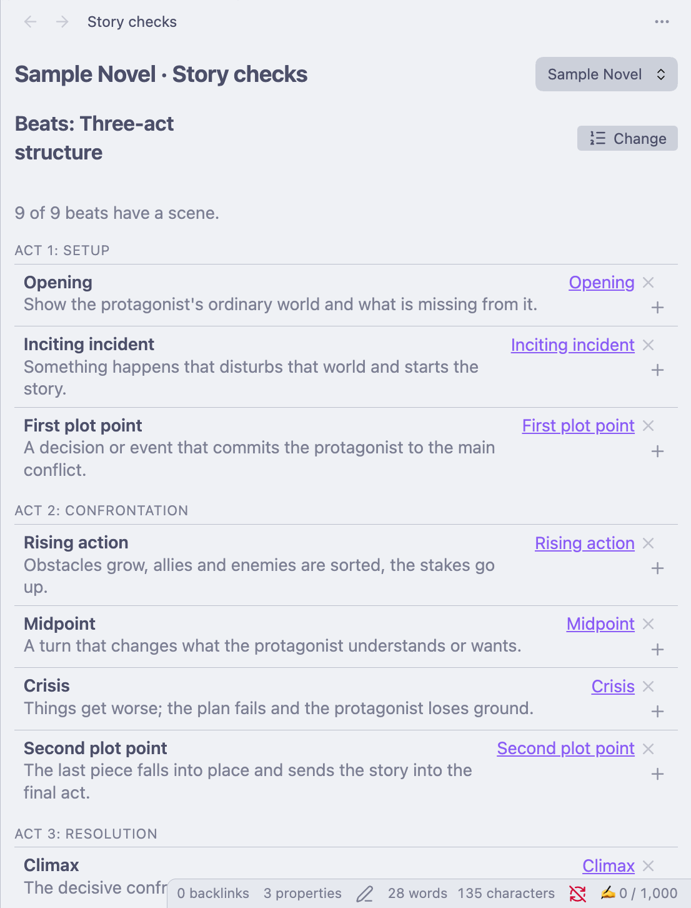
Story checks: the beat sheet with the scenes that cover each beat.
Open Story checks from the hub's ⋯ menu, or run Open story checks.
Beat sheets. Choose a beat sheet offers the outlines for the kind of book you are writing. Fiction has Three-act structure, Save the Cat, Hero's journey, Seven-point structure and Story circle. Sermon outlines have Expository, Topical, Narrative (the Lowry loop) and Gospel message. Christian non-fiction has a Doctrinal treatise and a Teaching book; History a Narrative history and a Thematic argument; Educational a Lesson cycle; Self-help a Transformation arc; Bible study a Weekly study rhythm; Reference an Entry template; Dictionary an Entry anatomy. You can add your own with beatSheets in a profile. Using one names your acts after it, remembers it in the project note (activeBeatSheet), and, if you leave the box ticked, adds a chapter and a scene for every beat with the beat's description as the scene's synopsis. The list then shows which beats have a scene. The + on a beat offers New chapter for this beat or Link a scene or chapter… (pick an existing scene or a whole chapter; linked scenes appear as chips on the beat, each with a × to unlink). A scene counts for a beat when its beat property names it, or when it was made from the sheet and still has the beat's name as its title. Using a sheet renames your acts, so use it on a new book or one whose acts you are happy to rename.
Setup and payoff is an optional template. Switch it on in Project settings, Setup and payoff tracking. Off, the marks on plotlines, the inspector section and this list are hidden; nothing already written is removed. On, the lower list shows every link from a setup scene to its payoff, and flags: a link to a scene that does not exist, a link recorded on only one of the two scenes (Fix writes the other end), a payoff that comes before its setup in reading order, and a scene linked to itself.
Booker can typeset the editor like a manuscript: a first-line indent, space between paragraphs, and a little extra before dialogue. This is only how it looks. Your notes stay plain Markdown.
If a paragraph already became a code block because of an old Tab, put the cursor in it and press Shift-Tab.
Settings, Open chapters in, sets where a scene opens when you click it in Booker. The default is the left pane of the writing area; Auto uses another pane when there is one and splits to the right when there is only one. See Where things open for charts and other pages.
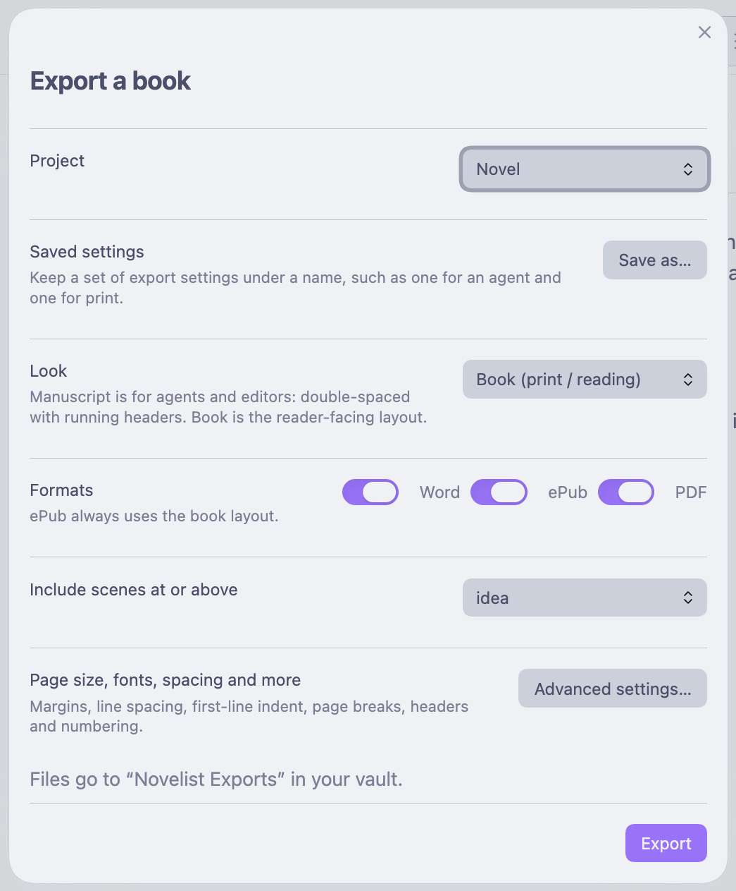
The export window: formats, what to include and layout.
Use the Export card, or Booker: Export book.
Notes with export: false and your Research folder are left out.
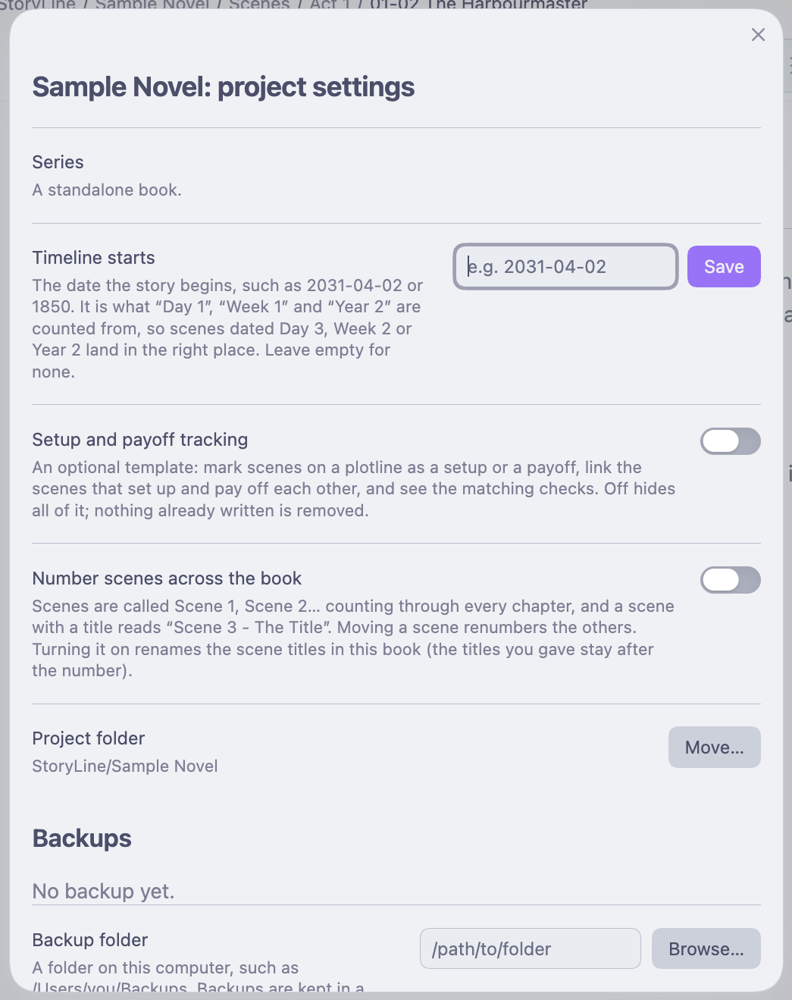
Project settings: series, timeline start, scene numbering, project folder, backups and import.
Booker's settings (Settings, Community plugins, Booker) are in collapsible groups. Each project also has its own settings, opened from the gear in the hub.
Booker settings
Project settings
***, ---, ___ or * * *); a chapter with no break stays one scene. Both ask first and show what will change. When scenes are merged, every scene's summary goes with the merged note (one line per scene, headed by its title) instead of only the first scene's, and the short AI summary, which described just that first scene, is dropped to be written again. The board and the hub show a note's summary under its title, or its description when it has no summary. Renaming a level renames it everywhere.Front and back matter pages drag like chapters: a glow shows where the page will land, and you can drop one at the very top.
Dictionary and thesaurus (right panel): look a word up, see its senses and synonyms, and click a synonym to replace the word you have selected. Select a word and use Look up in the right-click menu. Under Suggest richer words as I write (off by default), a bar of SAT-level alternatives appears over a plain word as you write it, like the scripture bar. Click one to swap it in. Shift+Space right after any word (a Bible reference is handled first) swaps in the first suggestion, or the first synonym if the word isn't on the richer-words list; press it again to step through the others, and once more to get your own word back. The bar stays up while you step, with the word now in your text highlighted (you can click any of them). Move the cursor away and the stepping starts over; come back to the new word and its own synonyms are offered. Hovering a word shows the bar too.
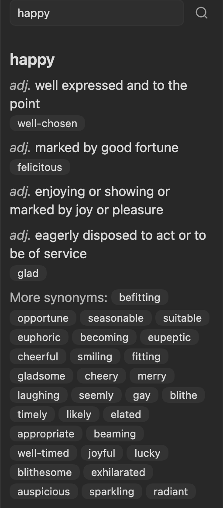
The Dictionary card. Under each sense are the dictionary's synonyms for that sense; More synonyms at the bottom comes from the thesaurus.
What comes with Booker. The dictionary is Open English WordNet (2025 edition: definitions and synonyms by part of speech and sense) and the thesaurus is the Moby Thesaurus (about 30,000 words, each with a long list of related words). Both are inside the plugin folder, so nothing is downloaded. The first time Booker starts on a computer, a background task adds them to your library (Booker/Library; about 55 MB of disk in your vault). Phones and tablets do not add them. If you delete one from the library it is not added again.
More synonyms lists the thesaurus's words for the word you looked up, best first. The thesaurus has no order of its own, so Booker ranks each word by how many neighbours it shares with yours; the closest in meaning come first. The thesaurus is loose by nature: expect near-synonyms and associations as well as exact ones. The same words feed the suggestion bar and Shift+Space, after the dictionary's own synonyms.
If the older Princeton WordNet 3.0 is also in your library (from the Resource manager), Booker uses Open English WordNet. Open English WordNet is licensed CC BY 4.0 and is derived from Princeton WordNet; the Moby Thesaurus is public domain. The licence texts are in the plugin folder under dictionaries/LICENSES and in THIRD_PARTY_NOTICES.md.
Share the vault folder with the Collaborative Folders plugin. Scenes are plain notes, so edits merge. Booker's writing mode only adds line classes to the editor, so live cursors keep working. Settings, stats and exports stay personal.
_Codex) and has no importer.type: scene in its properties and must be under the project's Scenes folder.Codex, that detection is on in Settings, and that capitalisation matches if that option is on.When you create a project, Timeline starts asks for the date the story begins (for example 2031-04-02 or 1850). It is saved on the project note as timeline_start. Scenes can then be dated Day 3, Week 2, Month 4 or Year 2, counted from that date: Day 1 is the start day itself, Week 1 is its first seven days, Year 2 starts one year after the start. Change the start date later with the gear icon at the top of the hub (Project settings). Project settings also moves the project folder to another place in the vault (not for books of a series yet), and has an Import chapters or sections button; the same import is under the hub's Import button. Without a start date, “Day 3” is not placed on the timeline maps. Dates can also be written 4/2/2031 (month first), Oct 2 2031, 1850, 1900s or 19th century.
Books of a series are grouped in the hub's project dropdown. Pick All books in
Story checks also has a Continuity section. It reads your scene properties and lists things worth a second look: a plotline marked as a setup with no later payoff (and a payoff with no setup before it), a plotline that disappears for eight scenes or more, a story date earlier than the scene before it (unless the scene is marked a flashback or similar), and a character in two different places on the same day (skipped when a time of day is given). They are prompts, not errors; press Open to go to the scene. Day, Week and Year dates are counted from the project's timeline start.
With All books in
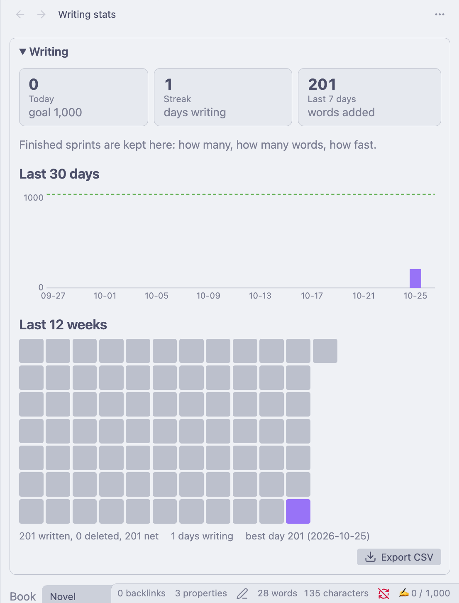
The Stats page.
Open Stats from the Plan card's strip or the ⋯ menu. It follows the hub's project and is in sections you open and close:
Project settings, Backups keeps copies of a whole project somewhere safe. Choose a backup folder (any folder on a computer; on a phone or tablet, a folder inside the vault), how often (only when you press the button, hourly, daily or weekly) and the kind: Full writes a zip of everything each time; Incremental writes one full zip and then copies only the files that changed (and notes the ones removed), starting a new full zip every ten runs. Full backups to keep deletes the oldest ones, with the incrementals that depend on them. Backups run while Obsidian is open and catch up when it starts; nothing is written when nothing changed. Back up now runs one at once. Restore… lists the backups and rebuilds the chosen moment as a new folder next to your project, <Project> restored <date>, so your own files are never overwritten. A book of a series can include the series' shared Codex.
Write footnotes the way Obsidian does: put [^1] where the mark goes and [^1]: the note on its own line anywhere in the same note, or write the note on the spot as ^[the note]. Insert footnote (command palette, or the superscript button in the formatting bar) adds the next numbered mark at the cursor, adds its line at the end of the note and puts the cursor there to type. A mark with no note, and a note nothing refers to, are left out of the export; notes are matched within one scene, so each scene can use [^1] again.
In the export window, Advanced settings, Footnotes chooses where notes are printed and how they are numbered:
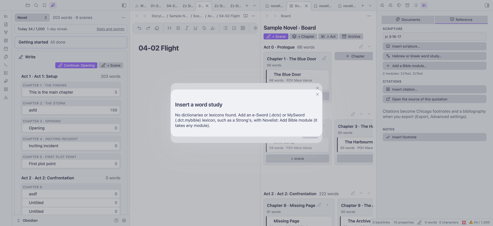
A verse inserted into a scene from the Reference panel.
Insert scripture (command palette, or the open-book button in the formatting bar) puts Bible text into the note at the cursor. Type a reference such as jn 3:16-18, 1 Cor 13:4-7a, Rom 8:28, 31, Ps 23, Gen 1:1-2:3 or Ps 119:105; Prov 3:5, or type words to search the translation and press a result. The passage appears as it will look; Enter inserts it. Selected text in the note starts the box.
Booker reads your own Bible files and ships none: e-Sword (.bblx), MySword (.bbl.mybible), and OSIS, Zefania and USFX XML (including the Apocrypha). Drop them on the Documents tab (or use Add Bible module): they are kept in Booker/Library/Bibles. Modules in the older Booker/Bibles folder, or the extra folder named in Settings, Scripture, are read as well. Modules bought from a publisher are often locked by the seller and cannot be read; free and unlocked ones open. Commentaries open in the Bible reader beside the verse; dictionaries are recognised but not used yet.
The window's menus set how the quotation looks, and remember your choices: block quote, inline quote or plain text; verse numbers raised, in [brackets], plain or none (a single verse is not numbered); the reference after, before, in brackets or left off; book names in full, SBL form (1 Cor) or short; the translation tag; each verse on a new line; words of Jesus in italics. Words the translators added show in italics if the module marks them.
For a single verse, the a b c buttons quote only part of it: Booker splits the verse at its clauses (hover a letter to see its words), and the reference reads John 3:16b. The split is a guess at where you would cut, since modules store whole verses. A quotation that starts or stops mid-verse gets an ellipsis. Verse numbers are real superscripts in Word, ePub and PDF.
John 3:16) and a small bar with Insert and Read appears above it for a few seconds. It also appears when the mouse rests on a reference that is already in your text.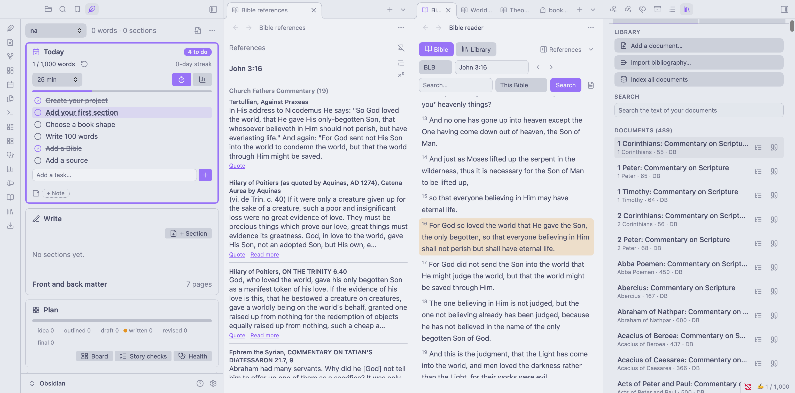
In reading mode, and in the commentary in the Bible reader, a scripture reference such as John 3:16 is underlined: click it to open the passage in the Bible reader. A citation [@key, 4] shows the full bibliography entry when you point at it and opens the source when you click; a key that matches no source is shown in red. In the Documents panel, the list icon beside a document shows every place in your books that cites it, and selecting a scripture reference inside the source reader adds a Read button.
Each kind of book shows the tools it needs. A non-fiction book gets People, Places, Key terms and Passages under Codex (instead of Characters, Items and Creatures), a Plan and research card in the hub (Bible reader, Sources, Add source, Health) and a getting-started list that asks for a Bible and a source. The Board, Plotlines, Timeline, Family tree and Stats icons (in the left ribbon, and in the bar across the top of the hub) appear only when the open book's kind has them, and the Bible reader and Documents icons appear only for books that quote and cite. A novel therefore shows no Bible reader. Every tool stays in the command palette, and Settings → Show every tool in the ribbon brings them all back.
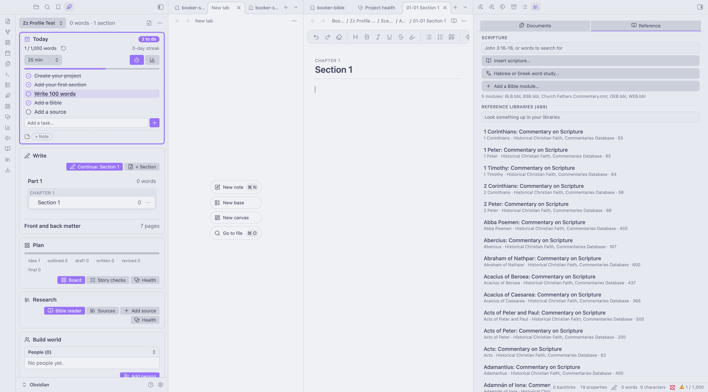
Right-click in a note that belongs to a Booker book and the menu gains Booker actions that fit where you clicked:
[@key] citation: Open the source (or see that no source has the key).The formatting bar has a Cite button (@) and a callout button beside Insert footnote. Typing [@ opens a list of your sources: keep typing to narrow it, pick one, and [@key, ] is written with the cursor ready for the page number. The commands Insert epigraph, Insert chapter summary and Insert discussion questions can be given hotkeys in Obsidian's Hotkeys settings.
The Project health row in the export panel (stethoscope button) reads the whole book, shows a one-line count of the warnings and, when opened, lists what needs attention. The command Open project health opens the same list as a full pane:
[@key] that matches no source, and sources you added but never cited (reference libraries are not expected to be cited).[^1] mark with no note text, a note nobody uses, and a note written twice.Spelling is not checked here: Obsidian's own spell checker does that as you type.
Click a line to jump to it. Story checks (beats, setup and payoff, continuity) are one button away. When you export, Booker also tells you in a notice if a citation matched no source and was printed as typed.
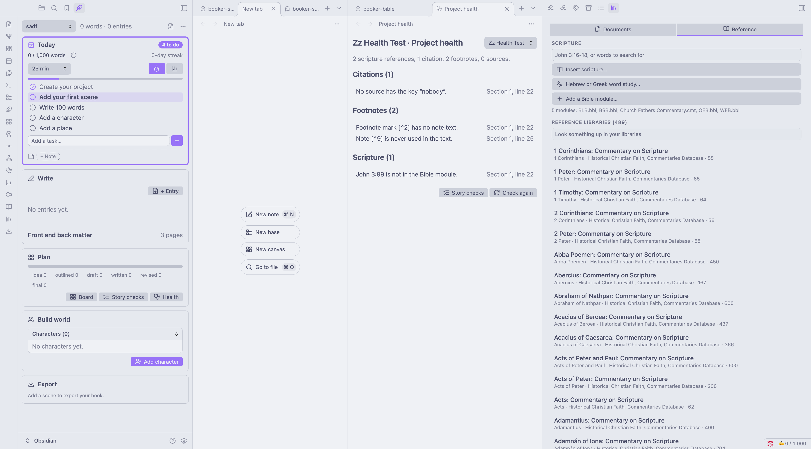
Non-fiction books can end with a Scripture Index: every reference found in the chapters (such as John 3:16, 1 Cor 13:4-7a or Romans 8), grouped by book in Bible order, each with the chapters it appears in. It is on by default for templates that list one (Christian non-fiction), and any book can switch it on in the Advanced export window under Footnotes and sources. Back matter and the bibliography are not scanned.
Grace: unearned favour (a dash works too, and a line that continues the one before joins it). On export Booker sorts it A to Z and sets each term in bold. A page that does not look like a list of entries is printed as you wrote it.Add an indexTerms property to the book's project note (open it in Properties as a list, or type grace, faith, covenant on one line). When you export, Booker prints an Index at the end of the book: each term that occurs as a whole word, in any capitals, with the chapters it appears in, in A to Z order. Terms that never occur are left out. If the book also has a back-matter note called Index, the generated index replaces it. Switch it off in the Advanced export window under Footnotes and sources.
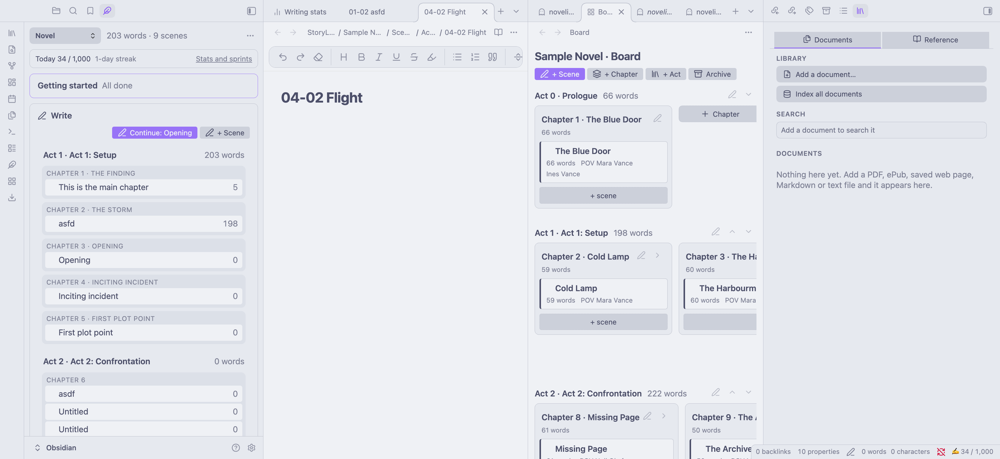
The Documents and Reference panel on the right, beside the hub and a scene.
Booker: Add source adds a book, article, PDF, ePub, saved web page, Bible module or Markdown file to your library. Each source gets a small note in the Sources folder with its citation details (author, title, publisher, place, year and so on); the file itself stays where it is, so large collections do not become thousands of notes. Search sources searches the text of everything in the library (or one source) and shows a snippet with its page, chapter or paragraph.
Open a source in the reader, select text and choose Highlight, Quote or Cite. Highlights are saved with the source (with a little of the text around them, so they survive a re-import), can have a colour and comment, and a link back opens the original at that spot. Quote inserts a block quote followed by a citation [@key, p. 45]; Cite inserts only the citation.
Booker only goes online when you press a Download button. The Resource manager lists everything you can download: the search models and the writing model, the place data the Map uses to find a city or zip (under Maps), reference libraries found so far (Church Fathers, Josephus, Bibles, medieval sources, papyri) and every work in the Christian Classics Ethereal Library (CCEL). Open it from the Resource manager button on the Import card, from Settings → Search by meaning, or with the command Resource manager.
Each download runs in the background: the circle in the hub spins and the task viewer shows its progress, with a Cancel button. Downloads are checked (size and checksum for models) and a cancelled or failed one leaves nothing half-written. Models go in the plugin's models and models-gen folders; libraries are added to your library.
CCEL. Choose… opens CCEL's own list of about 1,300 works (as ThML, their markup), which you can filter and tick. Each is turned into a Booker library, grouped under Christian Classics Ethereal Library. CCEL asks programs to wait 10 seconds between requests, and Booker does, so about 100 works take 20 minutes and all of them several hours. Stopping is safe: works already added are skipped next time. The editions are mostly public domain, but CCEL claims their formatting, so keep them for your own use.
Tertullian.org and Fordham. The same Choose… list. Tertullian.org gives about 150 works (Roger Pearse's translations, a library each, one section per web page); most are already inside the Church Fathers: Writings database. Fordham's Internet Medieval Sourcebook gives about 30 topics (the End of Rome, Islam, the Crusades, law texts…), a library each with every text a section; a topic holds up to a couple of hundred texts and Booker waits 2 seconds between requests, so a large topic takes about ten minutes. Fordham asks that you not republish its pages, so keep them for study. Both sites' robots.txt rules are followed.
Church Fathers (HistoricalChristianFaith). Download and add fetches the whole GitHub repository once (about 290 MB for the Writings, 130 MB for the Commentary), makes one library per author or Father, adds them, and deletes the download. The Writings become about 150 author libraries; the Commentary about 325, one per Father, with the Fathers' comments under each Bible passage (the folders named after Bible books hold that book's own quotations of the Old Testament). Authors you already have are skipped.
From a terminal. node scripts/fetch-resources.mjs does the same with the same rules: list, models --plugin <booker folder>, site ccel|tertullian|fordham --out <folder> [--match text] [--limit n] [--dry-run] and archive hcf-writings|hcf-commentaries --out <folder>. It writes .nlib libraries into the folder; run it again to carry on, then drop the folder on the Import card. Libraries marked Download here is coming (Monergism, Josephus, the Bibles, the papyri) open their web page for now. Downloads need the desktop app.
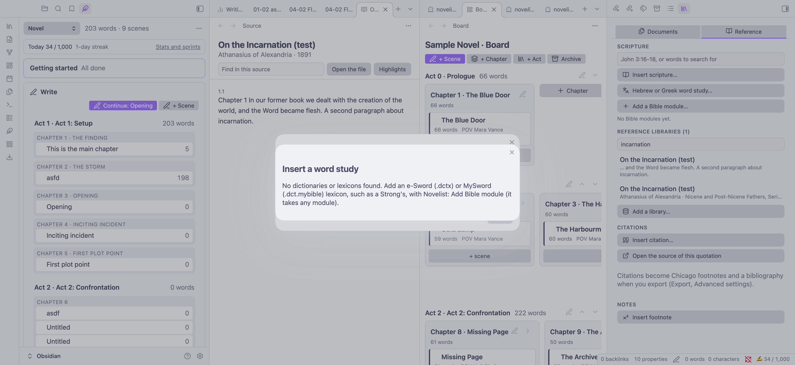
Reading a reference library entry.
Everything you add lives in one folder, Booker/Library, with three subfolders: Bibles (Bibles and commentaries), Databases (reference libraries, dictionaries and other SQLite databases) and Documents (PDF, ePub, web pages, Markdown, Word). Copy the whole folder to another vault or another Booker install and it works as it was.
The Documents tab has a drop zone: drop files, or a whole folder, and Booker works out what each one is and where it goes. What can I add? lists the kinds it understands. Word, OpenDocument and RTF files are turned into Markdown on the way in. A folder from another Booker install (documents or libraries with their notes) is copied across as it was, and skipped if it is already in your library. Each database has a three-dot menu with Fields and navigation…: for a database that is not a Booker library you choose the table and which column is the title, key, text, place and parent, and which of title, key and place show when browsing. The choice is saved beside the database. Use the command Move my Bibles and documents into Booker/Library… to bring an older library (Sources, Booker/Bibles) across; nothing is overwritten.
Besides documents, the library takes databases: a Booker library (.nlib) or an e-Sword/MySword dictionary (.dctx, .dct.mybible). A library holds a work or reference book as a tree of entries (a Church Father's treatise by chapter, an encyclopedia, a lexicon, a catechism, a collection of creeds), each with a place to cite it from. It is searched with everything else, opens in the reader at the matching entry, and is quoted and cited like any source. The Reference tab lists them and has a lookup box that searches only your libraries. The format is a small SQLite file described in docs/REFERENCE-LIBRARY-FORMAT.md; scripts/make-nlib.mjs builds one from a JSON file.
Import bibliography (Documents tab, or the command palette) reads a BibTeX (.bib), RIS (.ris) or CSL-JSON (.json) file from Zotero, EndNote, Mendeley and similar tools. Each entry becomes a source with its citation details and the key it had before, ready for [@key]. Entries already in the library are skipped.
Look up the scripture reference at the cursor finds a reference such as John 3:16 or 1 Cor 13:4-7a around the cursor and opens the Insert scripture box on it, so you can preview it, change the translation or style, and replace it with the quotation.
Write [@key, p. 45] in the text. In the export window, Advanced settings, Footnotes and sources, citations become Chicago notes-bibliography footnotes (the first mention in full, later ones short) and an optional Bibliography is added at the back with only the sources you cited. SBL, APA and MLA are also available (choose the style in the same window).
Hebrew text, with vowel points, runs right to left in Word, ePub and PDF exports (a Hebrew font is built in for PDF). Search ignores vowel points and accents. Insert Hebrew or Greek word study looks a word up in a lexicon you own (an e-Sword .dctx or MySword dictionary, such as a Strong's) by number, word or English meaning, lets you edit the Hebrew, transliteration, meaning and Strong's number, and inserts it in the line of text or as a block quote.
In the export window, Saved settings keeps the current choices (look, formats, status filter, Advanced settings) under a name, such as “Agent” or “Print”. Save as… stores them (the same name replaces the old set), the dropdown loads one, and the bin deletes the one you have loaded.
In Advanced settings, Mirror margins on facing pages keeps the inner margin next to the binding on every page: Word's “mirror margins” setting, and the same behaviour in PDF. It is on by default for the Book look and off for Manuscript. ePub is not affected, because ePub text reflows and has no fixed pages.
series.json is updated, and a standalone book's Codex entries join the series' shared Codex (an entry whose name is already taken stays in the book's own Codex folder).The bar above the editor is one compact row: undo, redo, clear formatting; heading menu, bold, italic, underline, strikethrough, highlight; bulleted and numbered lists, quote; scene break (adds ***) and split (scissors). Split cuts the scene at the cursor: the text after it becomes a new scene right after this one in the same act and chapter (you name it), and later scenes move down one place.
In Advanced settings for a book, Scene break style chooses * * *, bullets, a short line, blank space, or your own mark, and Scene titles prints each scene's title as a small heading (off by default; scene titles were never printed before).
Open Resource manager and, under Word study, download Berean word-for-word Hebrew and Greek (82 MB, public domain). It is split into one small file per book and the big download is deleted. The same group offers Strong's Hebrew and Greek dictionaries (Open Scriptures) and the STEPBible brief lexicons (Tyndale House, CC BY 4.0); each becomes a dictionary module the word study uses.
In the Reader, click a verse (or drag over several) and press Word study on the bar. The Hebrew or Greek words slide in directly above each verse, in the order of the original (Hebrew reads right to left), each with its transliteration, English and Strong's number. Press the button again, or pick another verse, to put them away.
Click a word to open its word study page: the original, transliteration, Strong's number, parsing, and the entry from every dictionary you have. Insert writes the word into your most recent note as a formatted study line; Use this gloss does the same with a dictionary's own gloss. The editor's own Insert a word study command still works.
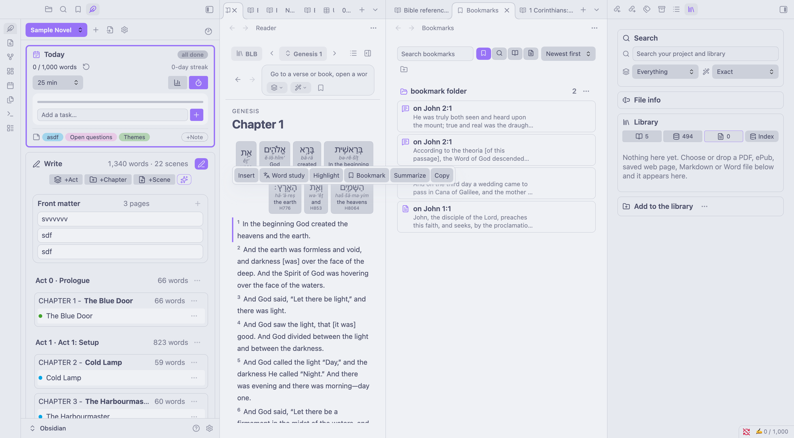
Click a word in Words you lean on on the Stats page to turn it into a character, place or other world entry, add it as an alias to an existing entry, or hide it from the list. Words that already match a name, place or alias are left out. All bars in a group share one width scale.
In Advanced export settings, Section dates controls how a date written at the top of a section (its story date) is printed: show or hide, alignment (centred by default), size, italic or bold. Works in Word, ePub and PDF.
The hub's Import button (top bar), or Project settings → Import a manuscript…, replaces the old drag-and-drop converter. Pick a Markdown, text, Word, OpenDocument, RTF or ePub file; Booker shows how many acts, chapters and sections it found, then adds them after what the project already has.
{#anchor} and heading links are removed.***, --- or * * * split a chapter into sections, named Scene 1, Scene 2… counting through the whole book (the standard numbering).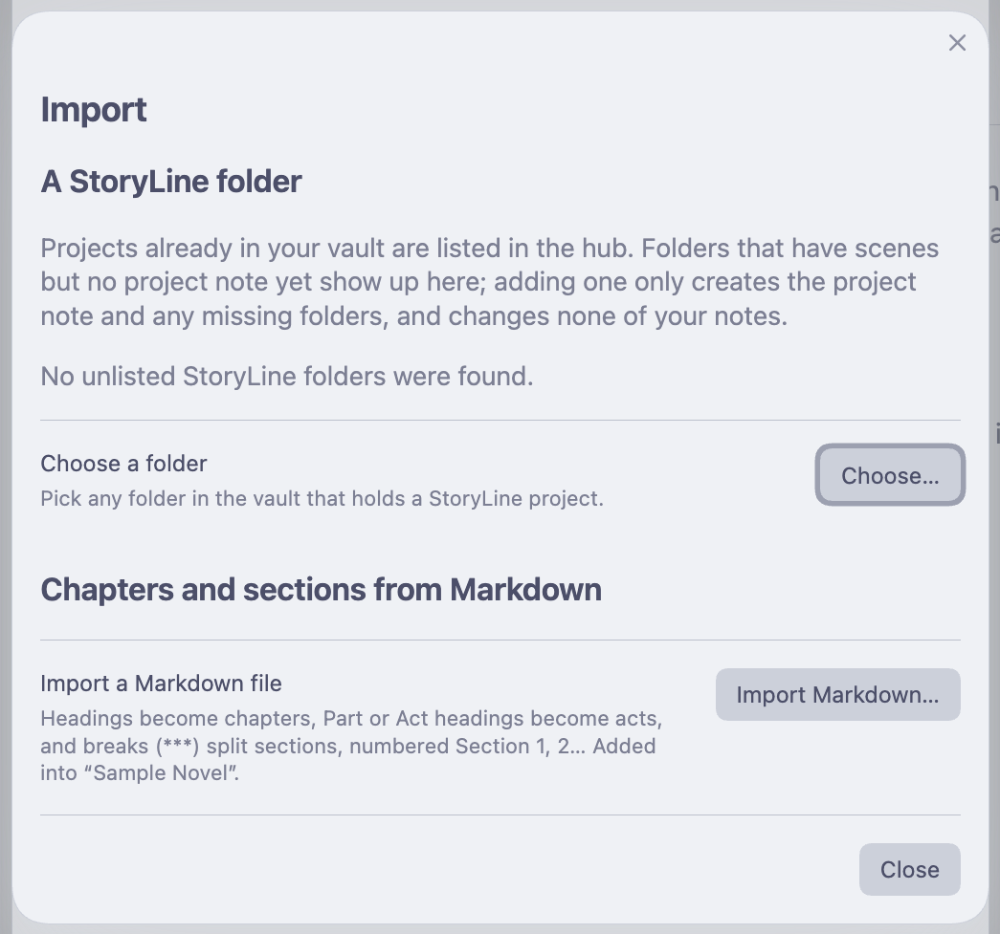
The Import window.
The Import button (arrow into a page) sits in the hub's top bar beside the ⋯ menu. It opens one window with two ways in:
The hub's Export card is centred: the quick exports (Word, ePub, PDF), then two larger buttons, Custom Export (formats, layout and advanced settings) and Show folder.
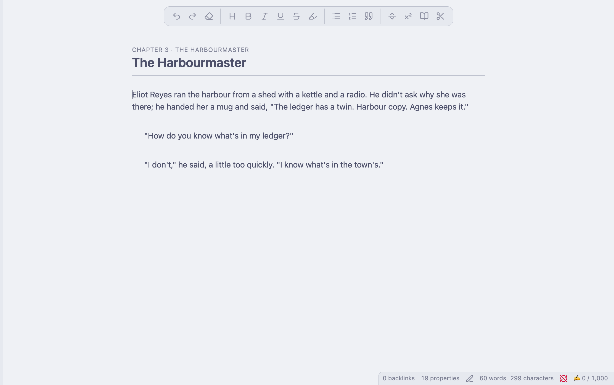
A scene with its generated title: the chapter above, then "Scene N" and the title.
With Number scenes across the book on (the default for new and imported books; Project settings turns it on for older ones), scenes are called Scene 1, Scene 2… counting through every chapter, so chapter 2 continues where chapter 1 stopped. A scene with a title of its own reads Scene 3 - The Title. Adding, deleting, moving or splitting scenes renumbers the rest within a second or two; to retitle a scene just type the new title and the number is put in front of it. Turning the setting on renames the scene titles in that book.
In a scene note the editor shows a generated heading instead of the file name: the chapter and its name in small capitals, then the scene title ("Scene 3 - The Title"). It is drawn by Booker and is not part of the text, so it is never exported twice or counted as words. The title itself stays in the note's properties and the file name stays as it is, so other tools that read them keep working.
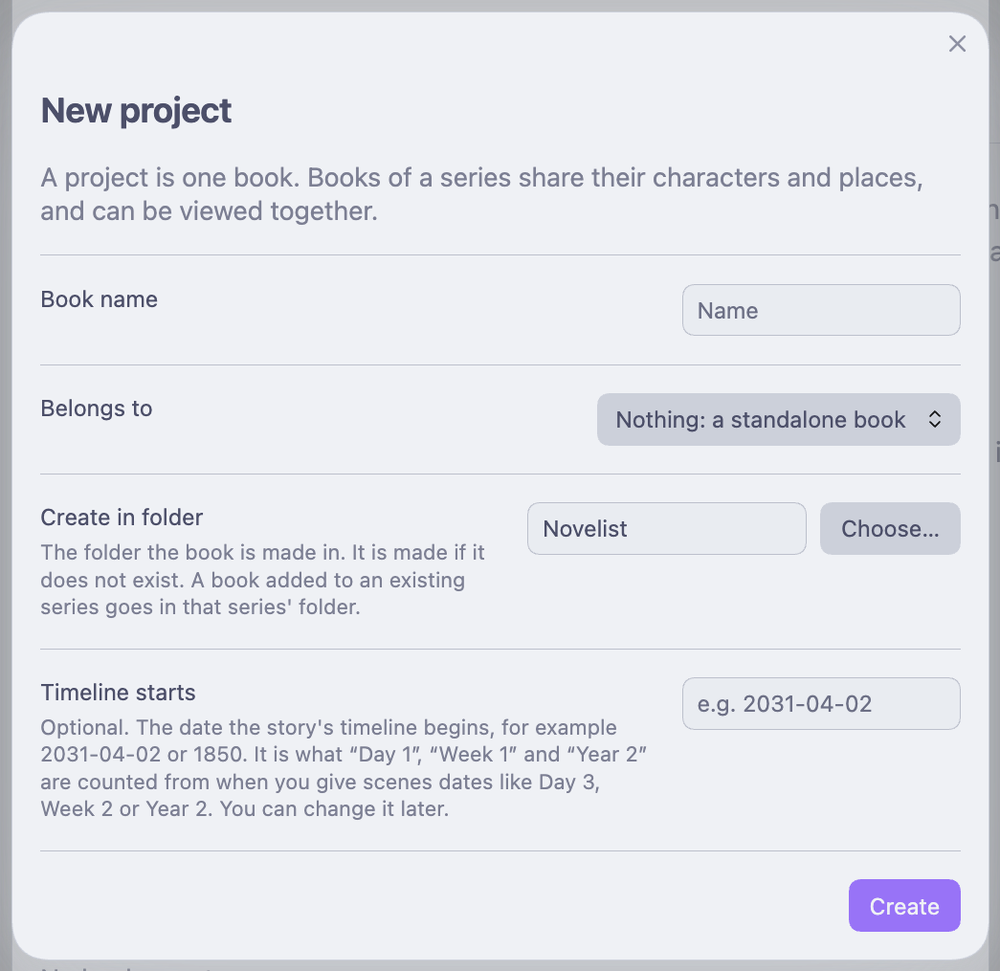
The New project window, with the folder to create the book in.
New projects are made in a folder called Booker. The New project window has a Create in folder field (with a Choose… button) to put a book somewhere else, and the plugin settings have Folder for new projects to change the default. Books already in other folders, such as an older StoryLine folder, are still found and keep working.
A new character, place, item, creature, lore entry, culture, system or life, and a new scene, is created with every property already in the note (empty): aliases and the profile fields for a codex entry; synopsis, POV, characters, place, dates, tags, conflict and emotion for a scene. They show in Obsidian's Properties and in the inspector, where you fill them in. This applies wherever you create them: the the Codex card, the Words you lean on menu on the Stats page, the board and the hub.
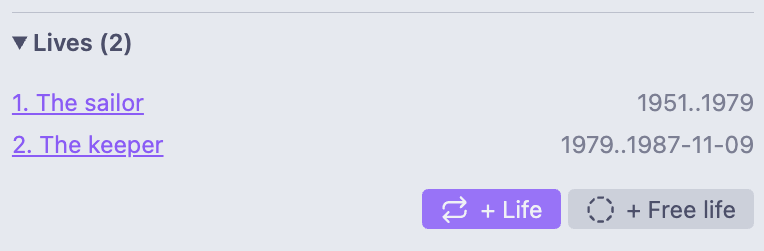
Open a character and the Lives section lists each life with its number and dates. +Life adds the next life in the sequence: it gets the next number and, if the life before it has an end date, starts a gap after that end (three days unless you change the gap in the Lives settings, see below). +Free life adds a life with no number; it floats free and is drawn grey on the timeline map until you give it a Sequence number in its properties.Lives are the first of Booker's sequences: every Codex category can work the same way (see the next section). Open Codex, choose Lives and use the gear to change the default gap or what lives can be anchored to; the Lives switch is always on.
On the timeline map, lives in a sequence keep their gaps. Drag a life's end and only the start of the next life follows; drag its start and only the end of the life before it follows; move a life and both happen. Hold Shift while you let go and every later life moves together instead. Free lives never move with the others.
A sequence is a list of notes that follow each other in story time: a character's lives, the eras of a world, the jobs someone held, the places they lived. Each item is numbered, has dates, and starts a set gap after the one before. An item can also be anchored to any other note, so that it starts when a scene, an event, a character or another item says it does. Any Codex category can be a sequence. Everything is done from the Codex card in the hub; no commands are needed.
In the hub's Codex card pick the category (Events, Places, or a category you added, such as Eras), then click the gear. The Sequence box is at the bottom of the settings.
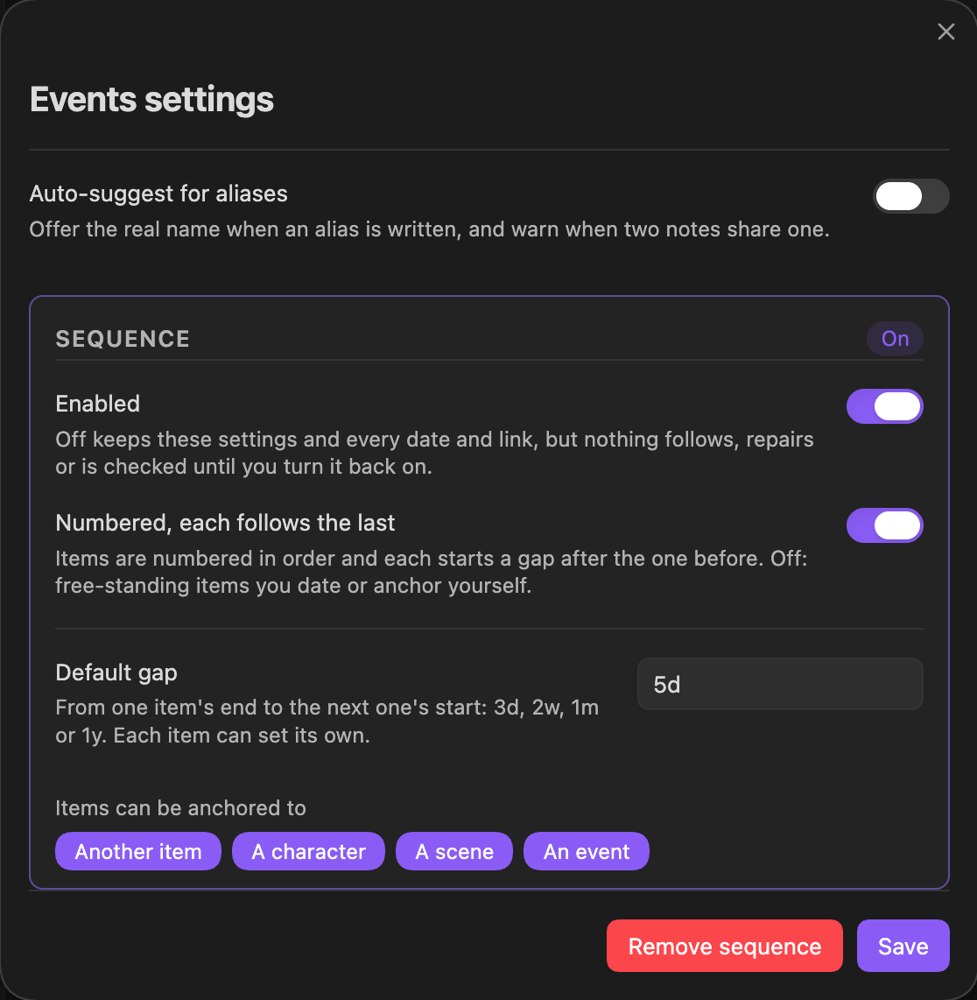
A category's settings, with the Sequence box.
3d (days), 2w (weeks), 1m (months) or 1y (years). Each item can set its own.Press Save. The category now shows number badges and dates, its Add button opens the full new-item box, and Check and Repair buttons appear.
Switching it off. Turn Enabled off and Save to pause a sequence. Booker keeps the settings, the marks on the notes and every date, number and anchor, but nothing follows, repairs or is checked, the timeline treats the notes as ordinary dated notes, Add is a plain name box, and the card says Sequence is off for this category. Turn it back on and everything resumes.
Removing it. Remove sequence (a red button, shown for a category that has been a sequence) deletes the sequence settings and takes the marks off the notes, after asking. The dates and links stay in the notes. It can be undone. Lives cannot be switched off or removed.
Click Add in a sequence category (or +Life on a character). The box asks:
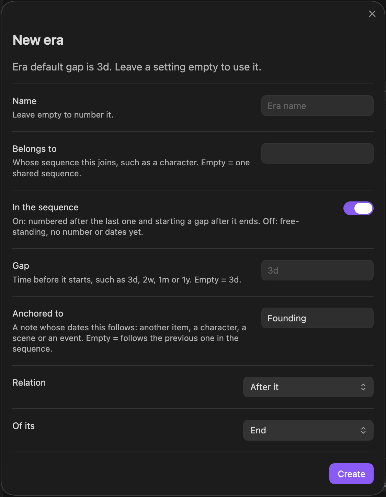
The new-item box, with an anchor chosen.
3d, 2w, 1m, 1y). Empty uses the category's default, shown in the box.The new item starts where its anchor says. If the anchor is a single day (an event, or a scene with one date) that day counts as both its start and end. An item in a sequence that has only a start date goes on indefinitely, so nothing can be measured from its end until it has one.
Everything is in the note's own properties, so it is plain text you can read and edit. The category's settings are in System/templates.json.
| Property | Meaning |
|---|---|
template |
The sequence this note belongs to (set when a category becomes a sequence). |
sequence |
Which list it is in: the sequence and whose it is, such as era/Ann. |
number |
Its place in the list; empty for a free-standing item. |
storyDate |
When it runs, such as 1342-05-03 or 1342-05-03..1342-06-01. |
anchor |
The note it follows, as a link such as [[Founding]]. |
anchorMode |
after, with or before. |
anchorEdge |
start or end: the anchor's edge it is measured from. |
gap |
This item's own gap. |
The inspector shows these under Time link (Anchored to, Relation, Of its, Gap) for a note in a sequence category; a life shows Anchored to and Gap among its other fields. Change them there and the next Repair applies them.
Booker works out where each item should start from its anchor and gap, and compares that with the date in the note. Check reports what is wrong; Repair fixes the dates.
Dates that you set by hand and that differ from what the anchor and gap give are reported as dates differ, and Repair would put them back to the computed date. Read the preview before accepting: to keep a different date for good, change the item's anchor or gap instead.
Items in a sequence behave as lives do. They share a row at the top of their lane; drag one and the neighbours follow so the gaps stay as they were; hold Shift and every later item moves together. A free-standing item is drawn grey. Dragging moves the dates but not the anchor, so Check may then report that the item differs from its anchor; Repair or a change of anchor settles it.
Everything above is in the hub, but each part is also in the command palette: Check sequences, Repair sequences, New sequence template, New item from sequence template and Sequence template settings.
The Map puts your story on the real world. It sits next to the Timeline map: the Map button on the hub's Plan card (and the toolbox menu), the command Open the map, or the ribbon list. Scenes, chapters, places, characters, events and any other Codex note can have a location, and everything that has one is a pin.
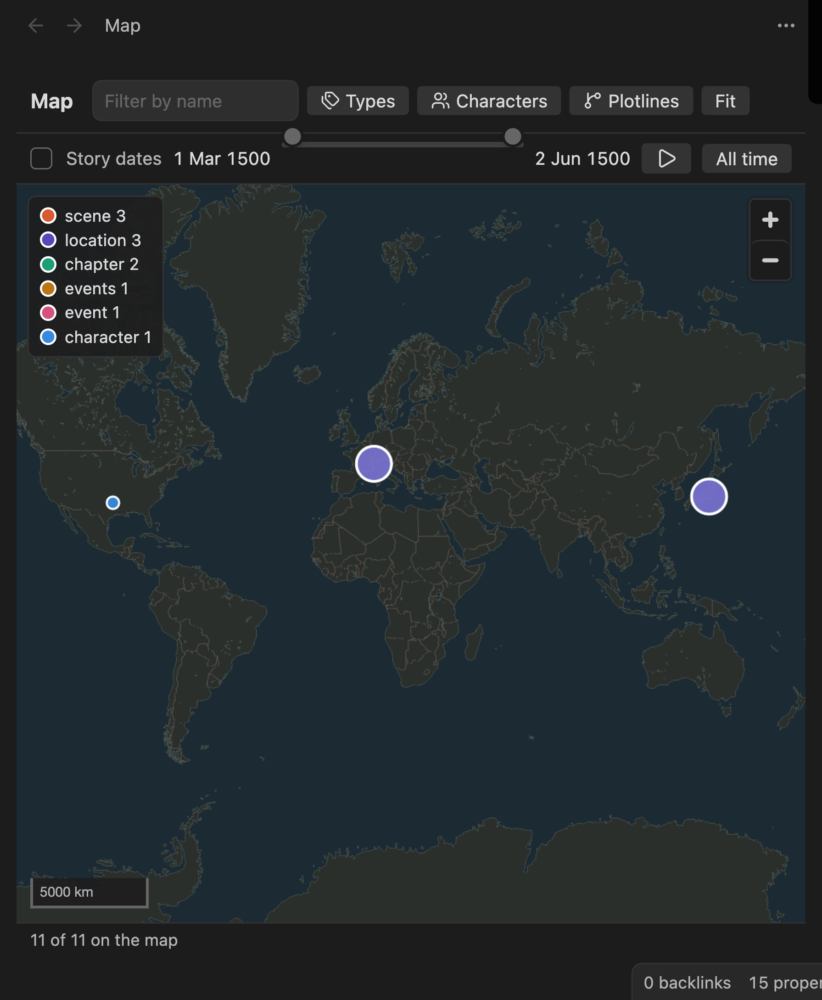
What you see. The map fills the whole pane, edge to edge, and the controls float over it as frosted glass. Top left: the map picker (the real world and your drawn maps), a search box that filters by name, and Filters. Top right: zoom in and out, Fit (zooms to everything shown), the grid on and off, and Maps settings. Bottom: the story-date dock, with the count of what is on the map above it. Controls rest at lower strength when you are not using them. Drag to pan, scroll or pinch to zoom. Pins that are close together join into a larger circle; click it to zoom in. Hover a pin for its name, type, story date and place; click it to select it (a ring and a small card with Open and Move), double-click it to open the note, and right-click it for the menu. The map follows the project picked in the hub; in a series, choose This book or Whole series under Filters.
Where a pin comes from.
Notes with no position anywhere are simply not shown. The count above the time dock says how many are on the map.
The date window. The dock along the bottom shows the span of your story. Move either handle to show only what happens between two moments of story time, and press Play to slide a window of that size through your story and watch the action travel. All time puts it back. Pins with no story date stay on the map unless you turn off Show places with no story date under Filters. Dates come from each note's storyDate, so Day 3, ranges and approximate dates all work as on the timeline. The dock only appears when something on the map has a date.
Filters. The Filters button opens a sheet under it: Types (each with its colour and how many pins; scene, chapter, location, character, event, life and any category you added), then Characters, Plotlines and, for a series, Books and Scope. Tick what you want to keep; the button shows how many filters are on, and Clear filters resets them. Your choice of types is remembered for the book (in System/map.json).
Open the note and find Location in the inspector (scenes and every Codex note have it). Type where it is and press Enter:
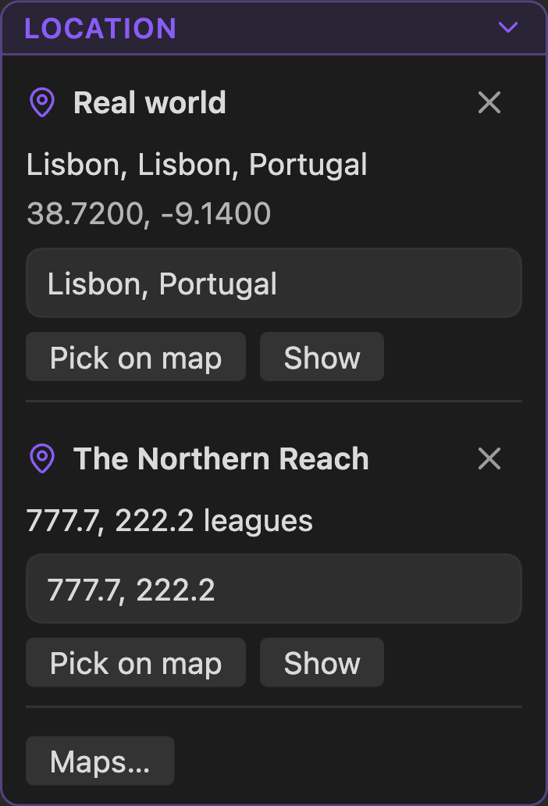
If one place clearly fits, it is used. If several do (there are many Springfields), Booker lists them, biggest first, and you click the one you mean. The note keeps what you typed in address, the position in geoLat and geoLng, and the name it resolved to in geoPlace; these are ordinary properties, so you can also edit them yourself or write them in bulk. Clear removes the location.
Place data. Finding a city or zip by name works offline from lists you download once. In the Resource manager, under Maps, press Download on Places: cities and regions (about 3 MB; about 25,000 cities of 15,000 people or more) and, if you want zip and postal codes, Places: postal codes (about 30 MB to download, about 130 MB on disk). The data is from GeoNames (CC BY 4.0). Until you download it you can still type coordinates. Street addresses are not looked up: type the city, or the coordinates.
The map itself. The world map is Natural Earth (1:10m, public domain), included in Booker's folder, so the Map works with no internet. It shows coastlines, lakes, rivers, country borders and state or province borders as you zoom in; it does not have streets or town names. Booker draws it with MapLibre (WebGL). If your computer has no working WebGL, or only a slow software version of it, Booker switches by itself to a compatible map that draws the same data (a lighter 1:50m copy) with Leaflet, and says so at the top of the map. You can choose the engine yourself in Maps settings → Display engine and checks.
Naming a place on the map. Right-click empty map and choose New place here…, type a name, and Booker creates a place in your Codex (a Codex location note) at that spot, on that map. From then on the name works everywhere: type it as a scene's Place, or write it (or an alias) in a scene's text with name detection on, and the scene sits at that spot. If the name already exists, Booker asks whether to move that place here. Copy position in the same menu copies the coordinates. A place is positioned per map, so give it a position on each map it belongs to.
Several pins close together. Pins that are close together on screen (every scene set at the same place, say) show as one grey badge with their number, whether or not anything is selected. Click the badge and the pins fly out in a circle round it, oldest first. Click one to select it, double-click to open it, right-click for its menu; click the middle (it shows how many there are), press Esc, or drag or zoom the map to fold them back. Very large groups use more rings. Zoom in and pins that are far enough apart stand on their own again; zoom out and they gather.
Double-click a pin to open its note. Right-click it for a small menu: Move or Open item. Move lifts the pin off the map with a shadow under it and a dotted ring round it. Drag it where it belongs; it trails the pointer on a spring and settles. Double-click it to set it down, or just wait: ten seconds after you last move it, it sets itself down and the new position is saved. While it is lifted, right-click gives Set down here, Put back or Open item, and Esc also puts it back. It works on the real world and on drawn maps, saves in one step you can undo, and a scene that takes its position from a place gets a position of its own when you move it. A chapter pin sits at the centre of its scenes; move it and it stays where you put it (saved with the map settings, on that map only). Right-click it and choose Reset to the centre of its scenes to let it follow its scenes again.
A story does not have to happen on Earth. Add drawn maps (a painting, a scan, a sketch, or just graph paper) and place anything on them, just like on the real world.
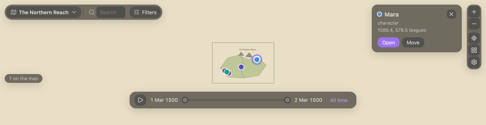
Open Maps settings from the gear at the top right of the Map, the command Maps settings, the Maps… button in a note's Location box, or Settings → Booker → Maps. A panel slides in over the right side of the map, and what you change shows on the map straight away. At the top, a switcher lists the real world and each drawn map (right-click one to move, duplicate or delete it; + New map adds one). Below it, the chosen map's settings are grouped in lists: Picture (with a preview of the grid over it), Coordinates, Grid. At the bottom, This computer holds the display engine and Checks the notes placed on a map that no longer exists. Done closes it.
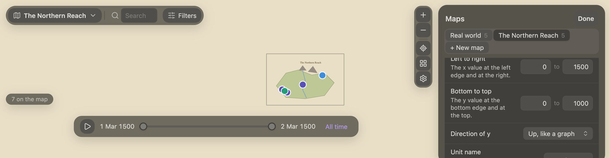
System/maps, so it moves with the book), or Choose from vault uses a file already there. Without a picture the map is a plain grid. Strength fades the picture so the grid shows through. If the file goes missing the map still works and the window offers to choose it again.A note can be on one position per map. In the inspector's Location box each map has its own row, and Add to a map… adds another. On a drawn map type x, y in its own units (for example 412.5, 188), or click Pick on map and then click the map (the cursor shows the coordinates as you move). A position outside the map's range is kept and marked. Positions are saved in the note as mapPos: ["reach: 412.5, 188"] (the map's id, then x and y), next to geoLat and geoLng for the real world. A scene without a position of its own uses the place it links, on the same map; a chapter sits at the centre of its scenes on each map.
Display engine. Under Display engine and checks choose Auto (the default), WebGL or Compatible for the real-world map. This is kept on this computer, not in your book, because it depends on the computer. Drawn maps always use the compatible engine, which suits flat pictures and works everywhere. The same page lists notes placed on a map that no longer exists and can clear those positions.
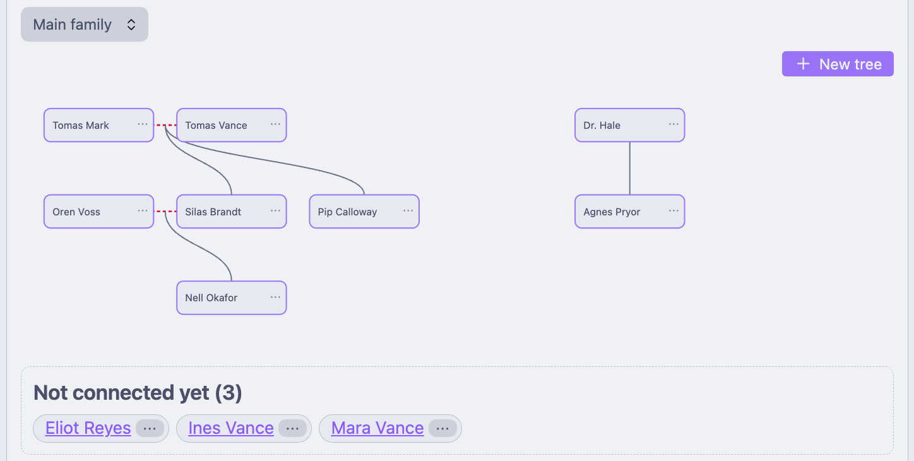
The Family tree icon on the ribbon (also in the hub's ⋯ menu under Plan) draws a node map of your characters: parents above their children, partners side by side with a dashed line between them. Click a person to open their character note. The ⋯ on a person (or right-click) lets you add a parent, partner or child, picking an existing character or creating a new one on the spot, and remove any of those links. The same links are the Parents and Partners fields in the character's Family section in the inspector, so the map updates as you write.The Main family tree shows every character. People with no links to anyone are set apart in Not connected yet underneath; link one and they join the tree. New tree makes another tree (a royal house, a second family): use Add person to choose who is in it, and Take out of this tree on a person's ⋯ menu to remove them. Links belong to the characters, so a person in two trees keeps the same parents and partners in both.
On the timeline map, a character's lives show in that character's lane when you add the character: all of them in one row at the top of the lane, above their scenes. A lane of Everything (or of a kind, place or plotline) leaves lives out, so add the character to see them.
The timeline map has a title, with the sources at the top and the filter and zoom bar directly above the lanes. The playhead is a vertical line with a flag on the axis. It is placed when you click the time line at the top, or when you click a bar (it goes to the middle of that bar). Zooming (the + and − buttons, Ctrl/⌘ + scroll or a pinch) pivots on the playhead: it stays where it is on screen while everything else scales around it, and it is centred if it had scrolled out of view. Click the flag to remove it. With no playhead, zooming pivots on the selected bar, or on the pointer. The +Custom button at the right of the filter bar shows or hides the box under it, which holds the sources and a row of dropdowns (Character, Scene / Chapter, Place, Plotline, Life, More) that add a lane in one step.
Under Settings → Your own book templates, Open templates file creates Book templates.json in your projects folder with one worked example (a poetry collection) and opens it. Edit it to describe your own kinds of book: levels (what the divisions are called), statuses, worldKinds, views, features, frontMatter, backMatter and citationStyle. Anything you leave out is copied from Fiction. Save the file and the new template appears in the New project window. A template with a built-in id (such as fiction) replaces that one. Existing books keep working because they only remember the template's id.
A new book starts with the pages its kind of book usually has: for example Foreword, Preface and Introduction before the text, and Appendix, Notes and Index after it. They are notes in the book's Matter folder, listed in the hub under Front and back matter; click one to write it, or use + to add your own (Acknowledgements, Glossary…). On export, a page is printed only when it has text, so empty ones cost nothing. Use the up and down arrows beside a page to change its order. The title page, copyright, dedication and bibliography are made for you from the book's settings and citations.
In the New project dialog you can also set how many empty chapters (or entries) to start with, and the citation style (APA, MLA, Chicago or SBL); the kind of book picks a sensible one by default.
The hub's Import button also takes .docx, .odt, .rtf and .epub files, as well as Markdown and text. Booker turns the file into Markdown first, so the same rules apply: headings become chapters, Part or Act headings start a new act, and *** lines split sections. Bold and italics are kept, and footnotes in Word and OpenDocument files become inline notes that stay with their paragraph. Google Docs and Pages files go through Download as Word (or Export to Word) first. RTF files have no real heading styles, so Booker guesses: a short line set larger than the body text becomes a heading (the largest size is the chapter level). Footnotes in RTF files are not kept; use Word or OpenDocument when you need them.
Obsidian callouts print in the exported book as a quote. > [!summary] In short followed by lines of text becomes a quote that starts with a bold In short.; with no title it starts with the kind (> [!question] gives Question.). Use > [!epigraph] or > [!quote] for a plain quote with no label, such as a key verse at the start of a chapter. Use them for chapter summaries, reflection or discussion questions, and sidebars.
The hub's Import button lists StoryLine folders that are not projects yet. Copy as project copies the whole folder next to the original as <Name> (copy), makes the copy a project, and reports how many files, scenes and world notes came across (and any that could not be copied). The original is never changed. Add in place instead turns the folder itself into a project by adding the project note and missing folders.
After you pick a manuscript file, the import window shows a preview of what it will become (acts, chapters and how many sections each has) and updates it as you change three choices: Chapters come from (every heading, or only down to heading level 1, 2 or 3; deeper headings stay in the text), Acts start with the word (default Part, Act; add Book or Volume, or empty it for no acts) and Extra section break (another line, such as # # #, that splits sections; *** and --- always work). Nothing is written until you press Import, and the import can be undone.
Sermon outlines is a kind of book with three levels: series, sermon and point. It uses scripture, footnotes and citations, and keeps Texts, Illustrations and Applications as world notes. Choose a sermon shape in Story checks and Add scenes lays out the outline (for the expository shape: Hook, Text and context, Big idea, three Points, Illustration, Application, Gospel connection, Closing and prayer).
The hub's Today list starts with first steps that depend on the kind of book. A sermon lists: create the sermon or series, choose a sermon shape, add the first point, add a Bible, add an illustration, write 100 words. A history lists a source and a person, place or term; a dictionary lists a source for etymologies; fiction lists characters and places. Steps tick themselves, and the current one has a button that does it (choose, add Bible, add source, new scene). Hide any step with its ×.
A profile you write yourself can include beatSheets: a list of { id, name, summary, actLabels, beats: [{ act, label, description }] }.
A scene's or section's status follows the kind of book. Fiction, Christian non-fiction, history and self-help use idea, outlined, draft, written, revised, final. Educational uses idea, outlined, draft, reviewed, final. Sermon outlines use idea, outlined, draft, rehearsed, preached. Reference and dictionary entries use stub, draft, reviewed, final. The inspector, the progress bar in the hub and Writing stats, and the export window's "Include scenes at or above" all use the book's own list, and new sections start at its first status. A profile you write can set its own list with statuses.
The command Index terms (rename, merge, add), and the Index button on the hub's Plan and research card, open a list of the words and names in the back-of-book index. Each shows the chapters it appears in, or says it was not found and will not print. Rename changes what is printed and keeps the old spelling matching. Merge into… makes one entry cover both: merging Zion into Jerusalem prints one line, Jerusalem, with the chapters of either word. The trash button removes a term, and you can add one by typing it and pressing Enter. The list is saved in the project note as indexTerms; an entry with other spellings is written Jerusalem|Zion.
In the Insert scripture window, the Saved styles row lets you name the current look (layout, verse numbers, reference place and so on) with Save as…, switch to a saved style from the list, or Delete it. Use for this book makes the book write verses from the chosen Bible, in the chosen saved style, whenever you insert or quote scripture in it (a sermon series in the NIV, a study in the BSB). It is stored in the project note as bible and verseStyle; remove those two properties to go back to the global choice. A book with its own choice keeps it when you change the Bible in the window for one insertion.
The Library is part of the Reader (command Open the library browser, or the Library button on the hub's Plan and research card): choose Libraries from the Source button to see the shelf.
The Library opens on a shelf of databases, not a list of every document: Bibles, Commentaries (your e-Sword and MySword modules), each collection you added (for example Church Fathers: Writings and Church Fathers: Commentaries), and Documents and books. Pick one and it opens the way that suits it:
The one box searches here (the open Bible, work or database), everything, or only documents; the first search of a library builds its index, which can take a while and is kept after that. The place you were reading is remembered with the pane.
Two small boxes inside the search box choose where and how to search.
.vec file beside the module..vec file beside the library, so it travels with the library. Index every library now in settings does them all in one go. Everything runs on your computer from the models inside the plugin folder; nothing is sent anywhere.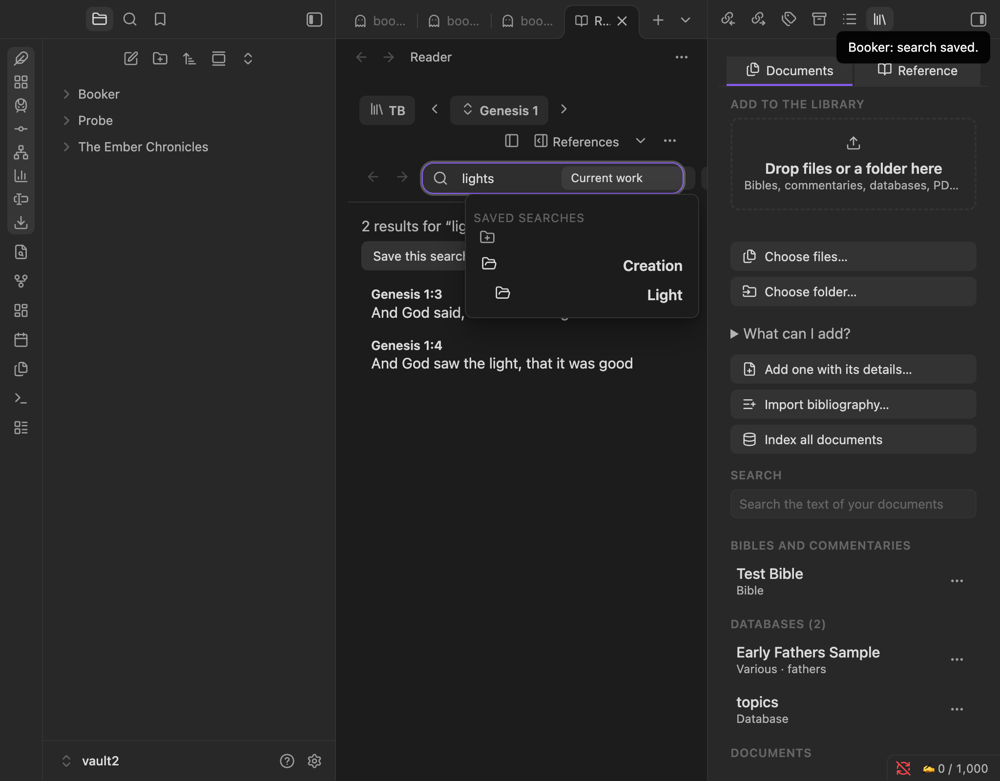
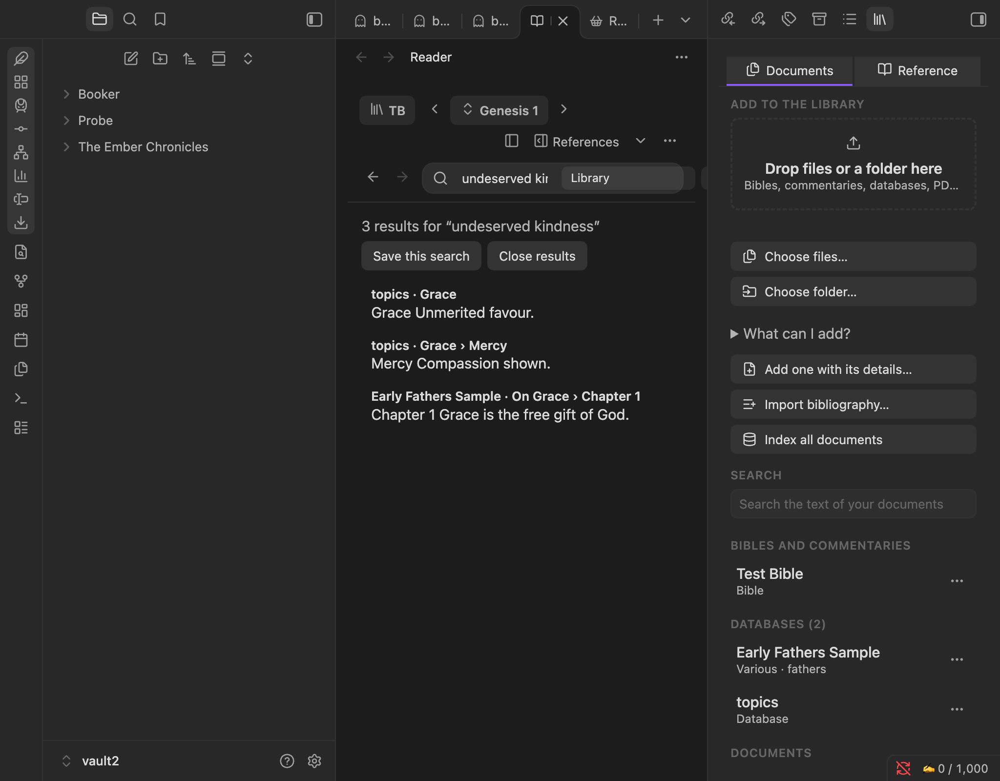
Click a verse to select the whole verse; shift-click another to select everything between, and cmd-click (ctrl-click on Windows) to add or remove single verses. Drag across the text to select just some of the words. The same works on the paragraphs of a library or document. With verses or paragraphs selected, cmd+C copies them, the toolbar's Insert button writes them into your note, and dragging them into a note drops the text where you let go. The References tab follows the whole range (John 3:16-18) and shows the notes for every verse in it. A small toolbar appears under the selection: Insert writes the words into the note you were last in, as a block quote with a footnote; Highlight colours them (yellow, blue, green or pink) and keeps the highlight; Bucket keeps them in the reference bucket; Copy copies them. Selecting words in a library or document gives Insert, Bucket and Copy. The References tab works the same way: click a commentary note, shift-click or cmd-click more, or select words inside one, and the same toolbar appears. Everything you copy (cmd+C, the toolbar's Copy, right-click Copy) or drag out of the Bible, a library work or a commentary, in the Reader or the References tab, carries where it came from. Pasted or dropped into a note it becomes a block quote with a footnote (BLB, John 3:16-18., or Irenaeus, in Church Fathers Commentary, on John 1:1.); pasted anywhere else it is the words followed by a line naming the source.
The reference bucket (command Open the reference bucket, or the ⋯ menu of the reader) holds everything you have kept, with its citation, the archive it came from, the book and the chapter. Filter by any of those or by your own topic tags, add a topic to an item, write an item into a note, or remove it. The bucket, saved searches and highlights are small files in Booker/Library, so they move with your library.
The command Summarize the selection or this note (and, in the reader, the Summarize button on selected words and the Summarize this section link over a long entry) picks the sentences that best stand for a text. It works from meaning: it finds the middle of what the text says and keeps sentences close to it that do not repeat each other, then shows them in the order they were written. Every sentence is the author's own; nothing is written or invented. A slider sets how many sentences (about a tenth of the text to start with). Insert into note writes them as a [!summary] callout; Copy copies them. It needs a model installed, like searching by meaning, and runs on your computer.
Under Settings → Booker → Search by meaning, Libraries and documents searched by meaning lists every library and document with a switch. Switch one off to leave it out of searches by meaning and out of Index every library now; its words still search as usual. Its existing index is kept.
Settings → Search by meaning → Manage indexes (or the command Manage the indexes for searching by meaning) lists every library and document with how much of it is indexed. Index all indexes everything not yet done; Index ticked does the ticked ones; Clear and regenerate ticked deletes their indexes and makes them again (useful after changing the model). Stop pauses and the work continues next time.
Right-click in a note, on selected words in a reading view, or on selected words or picked passages in the Bible and library readers, and choose Summarize with AI (with the writing model installed it opens on Written summary).
This is off until you switch it on (Settings → Search by meaning → Write scene summaries in the background). With it on and the writing model installed, when you move on from a scene you have changed a good deal (a fifth of it and at least 100 words since the last summary, and at least 150 words in all), Booker (which notices that you left the note, whether you opened another note or another view) waits a few seconds and then writes two summaries on this computer, one scene at a time: a short one of three sentences, shown under the scene in the project hub, and a longer one, the AI summary in the scene's properties (summary_ai; the short one is summary_ai_short). The command Write the AI summaries for this scene now does it on request. Switch the automatic kind off under Settings → Search by meaning. A scene that already has a summary you wrote (the summary or Synopsis property) is never summarised automatically, is never touched, and its own summary is the one the hub shows under the scene; the AI summary appears only for scenes without one. Writing one by hand with the scene's ⋯ menu still works.
While Booker works in the background (scene summaries, indexing), a small spinning circle turns at the bottom right of the Today card in the hub. Click it to open the task viewer: every job with what it is doing, a progress bar, the time so far and a Cancel button (Remove for one still waiting). When nothing is running, a quiet tick stays there so you can reopen the viewer and see what finished or failed; Clear finished empties the list.
Summaries use the scene's POV and characters (from its properties) when the scene's text names them, so they say Mara Voss and not she. A scene needs at least 150 words for the automatic summaries, 40 when you ask for them yourself; one that is too short shows as Skipped in the task viewer, with the reason. When you ask for a summary, a notice shows the short one.
To write the summaries for one scene yourself, use the ⋯ menu on the scene in the hub and choose Write AI summary (or the command Write the AI summaries for this scene now). It runs at once and shows in the task viewer.
With the optional writing model installed (download it from Settings → Search by meaning, or the Resource manager), the Summarize window offers a second kind, Written summary. The model, Qwen2.5-0.5B-Instruct, runs on your computer; only the download connects to the internet. It writes new sentences in its own words, so check them against the text before you rely on them; Booker marks the callout written by the model's name.
A long text is cut into parts of about 450 words at sentence ends. Each part is summarised, the part summaries are joined a few at a time, and the last round writes the summary at the length you chose (1 to 8 sentences). The window shows how many parts and steps this takes and an estimate of the time. If it would take more than about 45 seconds, Booker warns you and asks before it starts. While it works a progress window shows the part it is on, the time so far and the time left, with a Cancel button; cancelling stops at once and writes nothing.
In the source reader, select words and press Event (shown when a book is open). A small window offers a name and a date: Booker looks for a date in the words you selected, then in the passage around them (10 June 1342, 1348, c. 1200, 586 BC, 13th century), and tells you whether the timeline can read what is in the box. Add event writes a note in the book's Codex, Codex/Events/<name>.md, with type: event, the storyDate, the quotation and a [@key, page] citation. Because it is a dated Codex note it appears on the timeline map, where you can colour it, drag it to change the date, and open it. This suits history books especially.
The right-hand Booker panel is one stack of foldable cards, like the hub. Search is on top: type, choose where (everything, your project, library) and how (exact, fuzzy, meaning) with the icon buttons, and the results unfold under the box. File info shows the open scene or codex entry with every field named in small light text inside its box, related fields grouped in rounded boxes (the scene tag sits right of the heading, act and chapter under the title); the everyday fields are open, and Story time, Craft, Setup and payoff, Snapshots (saved copies shown as cards, each with Compare, Restore and Delete) and the rest fold away. Library lists your Bibles and commentaries, databases and documents in three tabs; each item's three-dot menu has Open file location, and databases have Map Fields…. Add to the library has one Choose source button for files or a folder, and accepts drops; its three-dot menu holds adding one document with its details, importing a bibliography, indexing, and what can be added.
Bookmarks (Plan and research card, Reader menu, or the command Open bookmarks) keep saved searches, verses and references in one list. Each has an icon for what it is: a magnifying glass for a search, an open book for a verse, and the file type (PDF, Word, Markdown, ePub, commentary) for a reference. Press Bookmark on the toolbar that appears when you select words or click a verse, or on a reference's header, to add one. Make folders with the folder button (they nest), move a bookmark with its folder icon, and filter by kind, search the list, or sort it.
Copy settings (the three-dot menu of the Reader and of References) decide how copied or inserted words are written: verse numbers (as superscripts or plain), chapter numbers, "…" between verses that are apart, letters for footnotes, and quote block or inline. Set default keeps them for every window; Use here applies them until that window is closed.